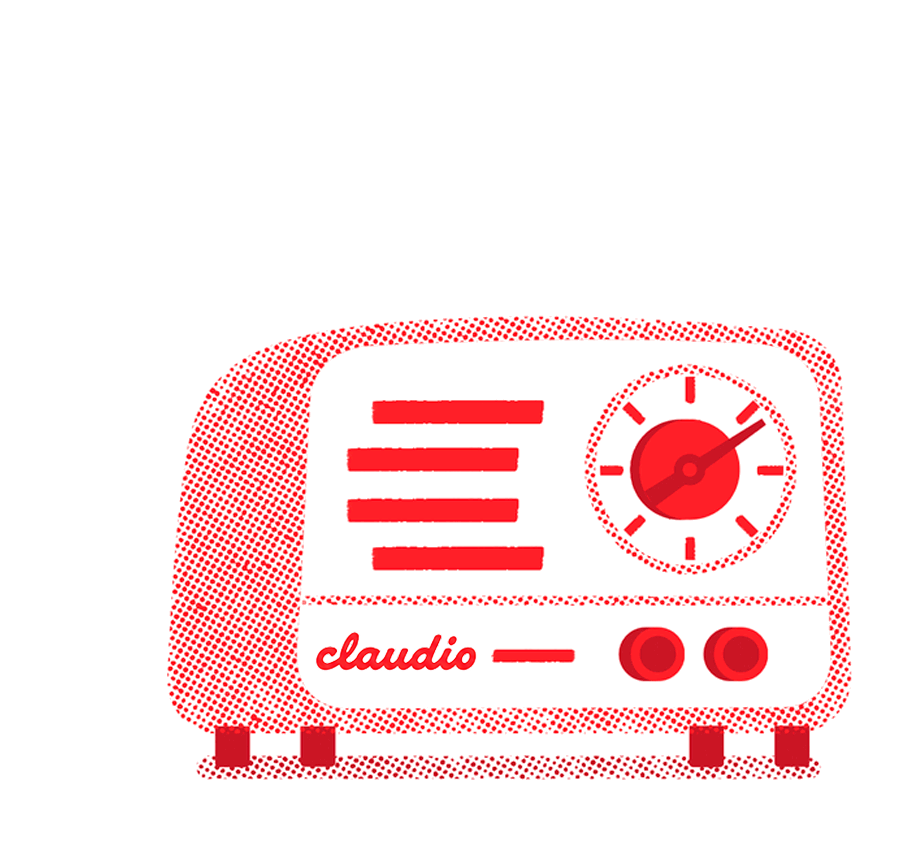

C
Claudio
Paused
↩ replay
—:—

Claudio FM
Now Playing
Your private
radio station
Waiting for Claudio…
Claudio
· now
Tell
me
what
you're
in
the
mood
for.
0:00
Request line
Tweaks
Skin
Cosmic
Glass
Radio
DJ language
English
中文
DJ volume
100%
Music volume
100%
Header tone
Blue hue
256°
Violet hue
330°